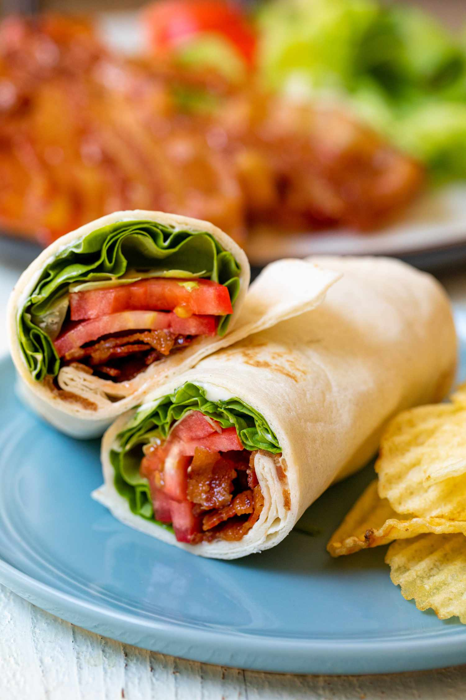

BLT Wraps

Nothing says lunch like this BLT Wrap!! Stuffed with crispy bacon, juicy tomatoes, and a tangy chive sauce, it's the perfect lunch for summer.
The flavors... of a good BLT are always on my instantly crave-able list but when I’m thinking of lunches that are easy to pack. I honestly think a wrap works better than a sandwich—it has less edges for stuff to fall out, after all!
The trick... to making a good BLT wrapis to make super crispy bacon, stack the ingredients in the right order, and use a good sauce. We will do all of those things in this version, and you’ll be left with a lunchtime winner!
Ingredients
- 1 pound bacon
- 1 head butter lettuce, leaves roughly chopped
- 3 small ripe tomatoes, sliced
- 6 large burrito-size tortilla wraps
Recipe Instructions:
- Preheat oven to 375˚F.
- Cook the bacon: Arrange the bacon on a few baking sheets with foil or elevate them on a wire rack, making sure the bacon is not overlapping. Bake the bacon for 15-20 minutes until it’s browned and crispy. Then remove the bacon from the baking sheet and let it drain on a few paper towels.
- Make the chive mayo: In a medium bowl combine the mayo, chives, lemon juice, garlic powder, and salt. Set aside.
- Assemble the wraps: Spread about 2 tablespoons of the chive mayo onto your wrap. Then layer with butter lettuce, tomato slices, followed by 3-4 strips of crispy bacon. Fold the edges over on the wrap and roll it into a tight cylinder. Cut the wrap in half for easier eating. Continue until all wraps are assembled.
- Packing the wrap for lunch: Roll the wrap tightly in foil and keep it in the fridge until you leave. I like to pack the wraps in a bag with a cold pack, but they are fine wrapped up for a few hours also. I think the wrap is best when the lettuce is nice and crispy and cold. Wrap ingredients all keep well in the fridge for 1 week. Make wraps on the day you are eating them!
Return To Home